| Take | Hero at 1024, then renders at 128 / 64 / 48 / 32 / 16 css px (2× retina sources), plus the 16px squint magnified | Rubric | Verdict |
|---|---|---|---|
| engineA-cut · icon.svghand-authored layered SVG — SHIPS | 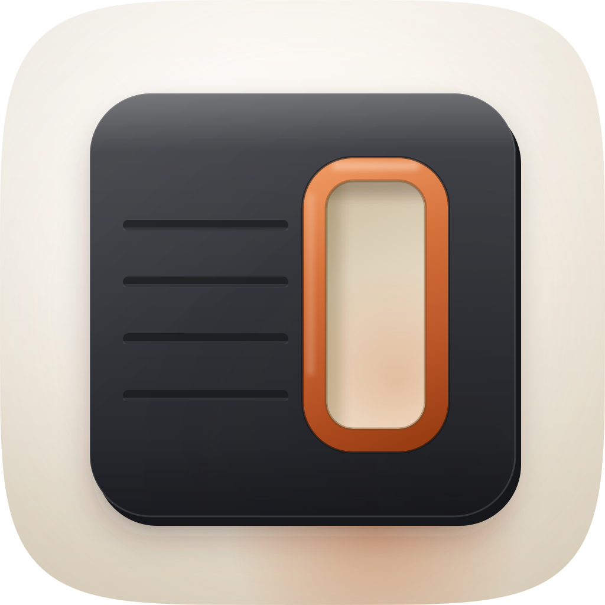 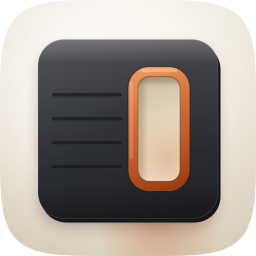 |
11 / 12 | Every non-negotiable clean on real renders. Mask: built on the family superellipse from squircle-path.txt, so the outline is bit-identical to its forty neighbours. Grid: body 720×716 centred at (512, 516) with 152px side margins. Silhouette: a slab with a tall void through it, nameable as a solid. 16px: the aperture is 168px wide, which is 2.6px at the 16px display size, and every graphite margin around the chamfer clears 100px, so the cut reads as an interior hole rather than a bite out of an edge. Measured contrast: body to ground 8.00:1, aperture floor to body 5.76:1, greyscale delta 137. Accent 5.8% of the tile, spent only on the cut wall and the light it throws. Failed check 10, named below. |
| engineC-cut-1 · engineC-cut-94137c.pngGPT-Image raster, corpus-referenced — the material target | 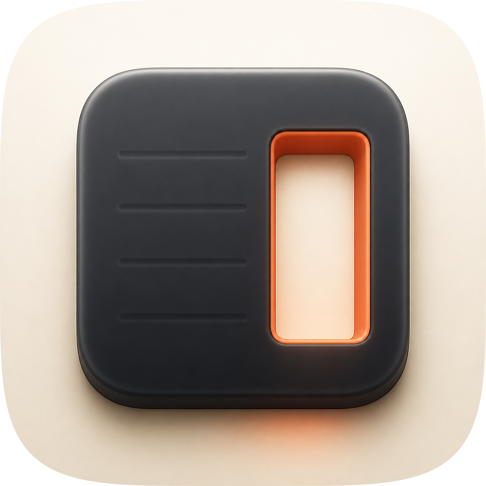 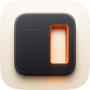 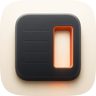 |
11 / 12 | The material engine, and it won the material read outright: a rounder body, a deeper contact shadow, and the warm bleed escaping under the slab's foot that says the opening is a hole rather than a panel. All three were rebuilt into the master and measured. It does not ship because it is pixels: no layer plan, no editable constant, its own rounded corner replaced by the family path at audit time, and its edges wobble under magnification. Scored on its squircle-masked version. Failed check 10 for the same reason the master does. |
| engineC-cut-2 · engineC-cut-56ead1-2.pngGPT-Image raster, second take | 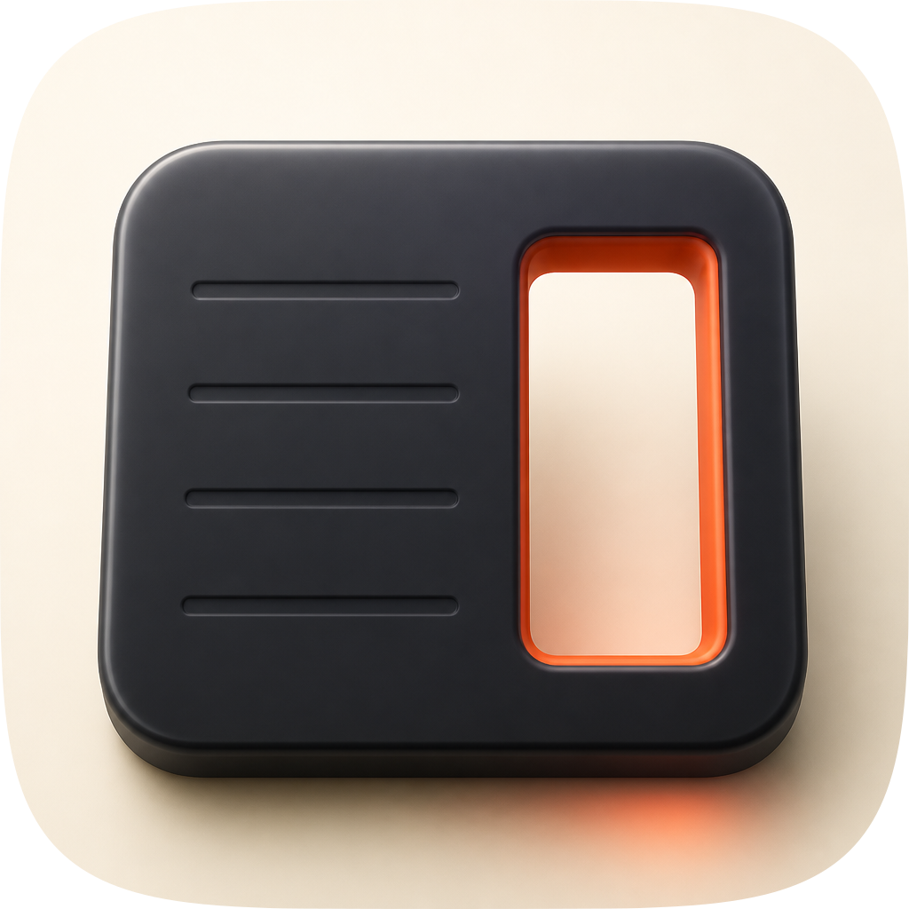 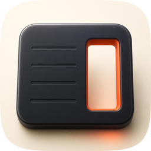 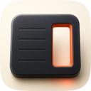 |
10 / 12 | The same concept under a three-quarter tilt. Richer as a picture and worse as an icon: the perspective throws the optical centre down and right, so check 2 fails on a body that no longer sits on the grid, and the tilt costs silhouette clarity at 48px without buying anything at 1024 the flat take does not already have. Its one contribution to the master was the brightness of its cut wall, which the flat take under-lights. |
| engineC-seam-1 · engineC-seam-d270c6.pngGPT-Image raster — the losing concept | 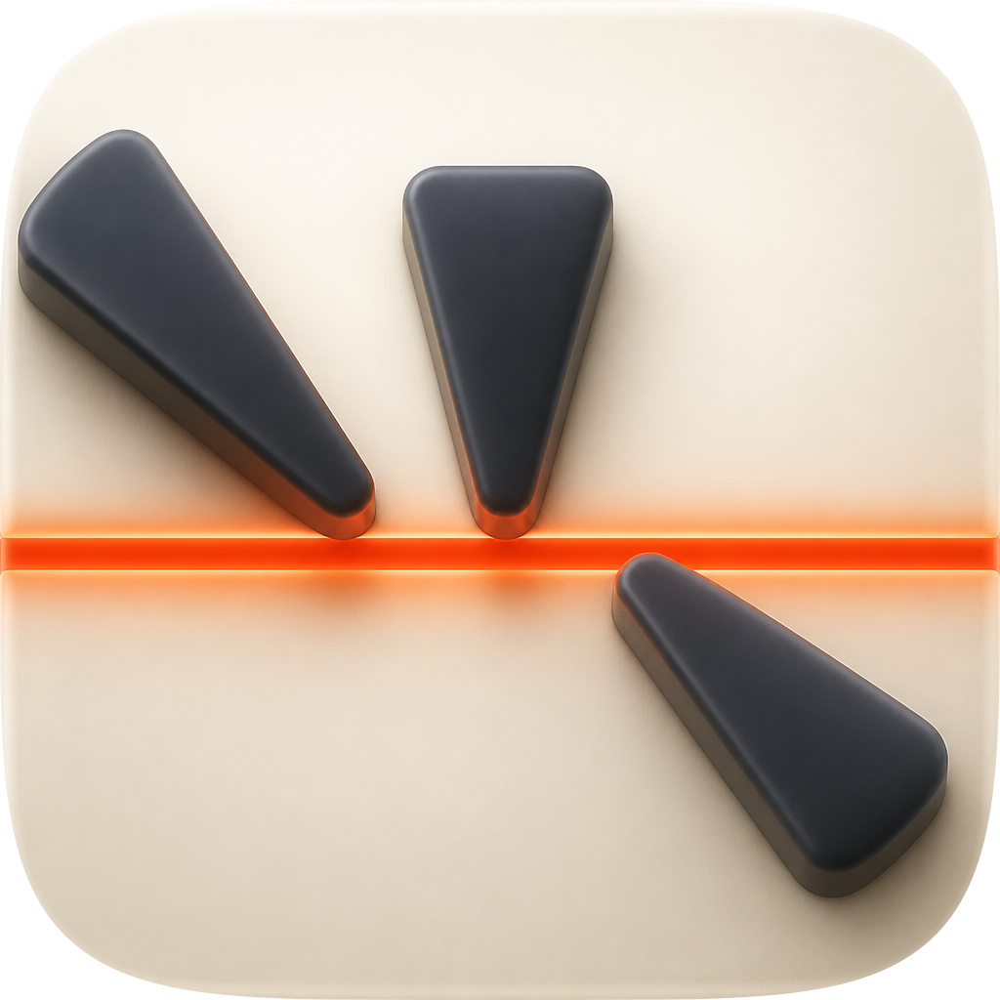 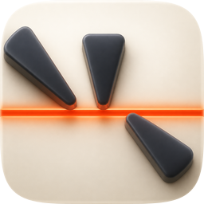 |
8 / 12 | The alternative direction: three independent finders converging on one flagged line, none cancelling another. Handsome at 1024 and dead below 64. Check 3 fails because the filled silhouette is three tapered fins, which read as exclamation marks rather than as probes; check 4 fails on the render, where the wedges collapse into smudges and the seam thins to a single warm pixel row. This is the take that decided the concept, and it decided it against itself. |
| engineA-seam · icon-engineA-seam.svghand-authored layered SVG, losing concept | 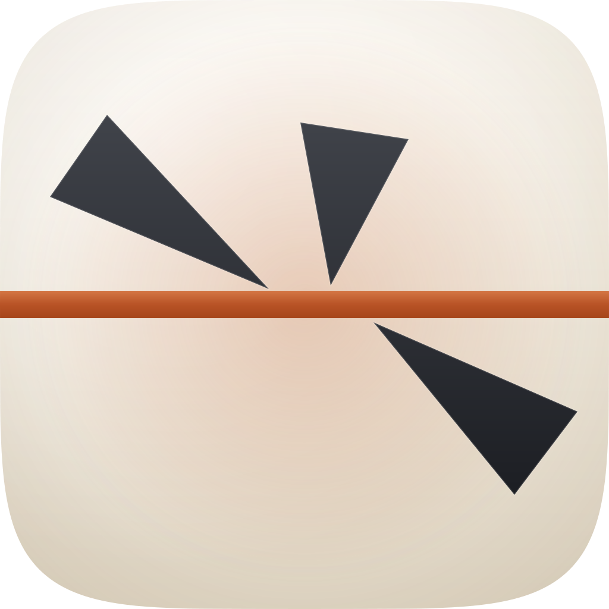 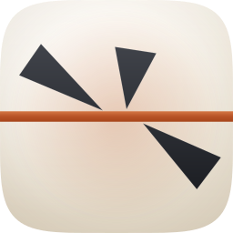 |
7 / 12 | The same losing concept authored as vector, kept so the sheet shows the concept judged in both engines rather than dismissed on one bad raster. It fails 3 and 4 exactly as the raster does, and additionally fails 5 and 8: the wedges carry no contact shadows and no thickness, so they float. Retained as evidence, not as a candidate. |
| engineB-arrow · engineB-arrow-0e3f6d.svgArrow 1.1 vector take | 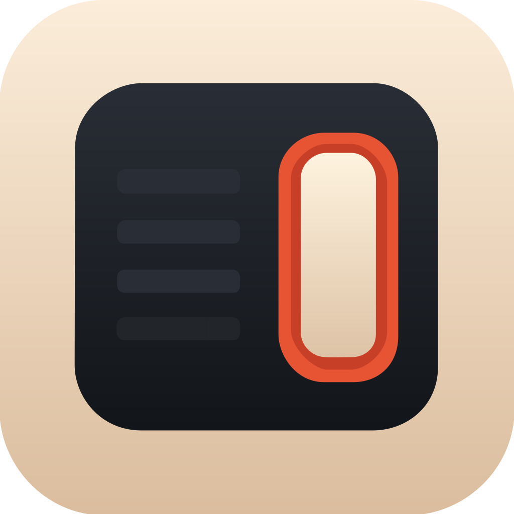 |
7 / 12 | The independent vector engine, given the same spec. It got the composition right and the family wrong. Check 1 fails outright: it drew its own rounded rectangle rather than the set's superellipse, so it breaks the shelf silhouette that every other icon here shares. Its ground runs #FBEDDA to #DBBD9E, noticeably sandier than the family's #FBF7F0 to #DED4C2. Flat fills throughout, so 5, 8 and 9 fail on material. Nothing was salvaged; the master already had the geometry. |
build_icon.py. Four scored rounds ran against the raster with the full metric tier engaged; r02 was accepted at every size and the three rounds after it were rejected at every size, so what ships is the best take the measurements ever promoted rather than the last one authored. Known liabilities to revisit: Check 10, variant robustness, genuinely fails and is the one to watch. The identity is a void that reads brighter than the body it sits in, so it is hostage to a light ground: invert the register and the hole reads as a filled panel, which is the opposite of what it means. That is survivable here because every icon in this marketplace is a decorative PNG with no compositor downstream and only the Default variant ever renders, but it would have to be redrawn before this became an Icon Composer package. Second, the chamfer's own contrast against the body runs 1.48:1 on its shaded lower face; it survives on the seat edge re-stroked over it and on the aperture floor's 5.76:1, not on the accent's own boundary. Third, shelf_check puts this tile at 0.667 structure correlation against mockup-fidelity, its nearest neighbour; that is below the 0.80 look-at threshold and the 16px strip confirms they do not read as each other, but it is the pair to re-check if either icon is ever revised.